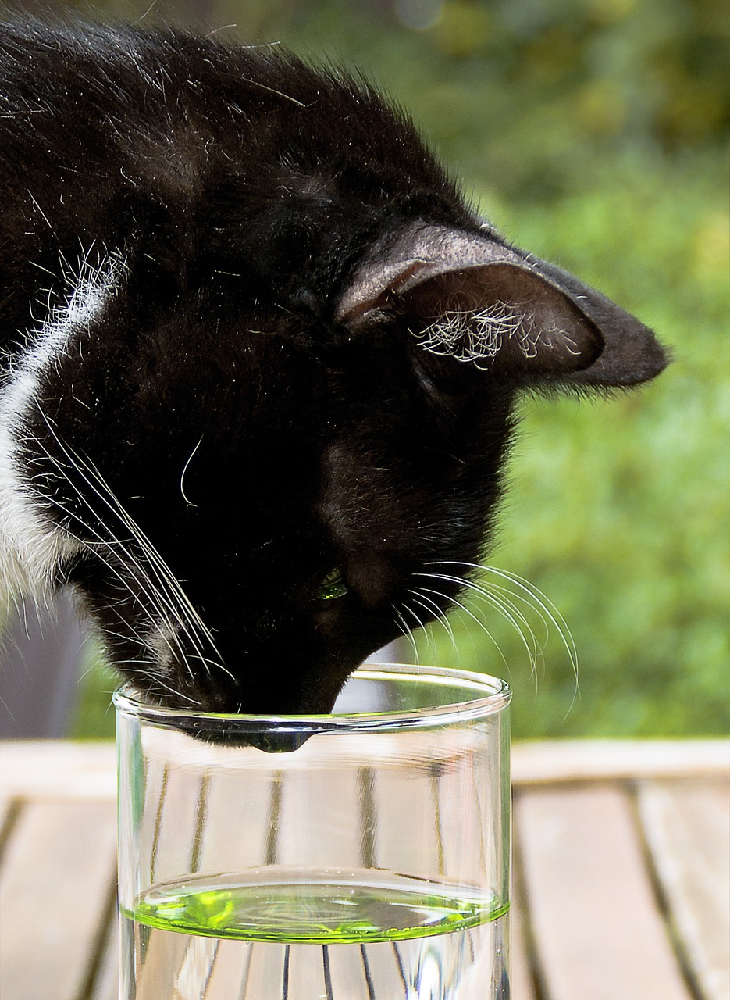

Glass of water

Description
Mmmm Stay hydrated. Drink more water, less soda!
Ingredients
Steps
- Grab a glass or cup of some sort.
- Find your trusted source for water. This might be a faucet, refrigerator, reverse osmosis machine, water cooler, etc.
- Put the glass or cup under the spigot, faucet, or whatever you want to call it. I'm just going to call it a spigot for fun.
- Turn on the spigot and wait until the glass is nearly full. Shut off the spigot before it overflows!!!!
- Enjoy your high quality H2O